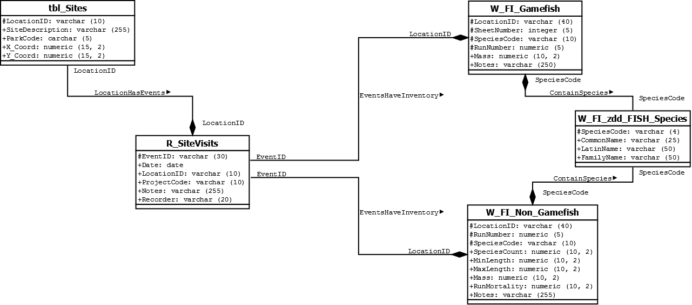

George Washington Birthplace Memorial National Park
Problem
Curators for the National Parks Service George Washington Birthplace monument are investigating a geodatabase to catalog the inventory of fish species data as well as other features around the park.
They have provided text files for event recordings, x,y coordinates, local fish species, and inventory data of fish collected by wildlife researchers.
Procedure
Using Microsoft Access, these tables had their attributes listed and using key attributes as a way of interrelating the data.
In the figure above, Fig 1, you can see how this data looks in a Microsoft Access database.
The subsequent diagram following Fig 1 is the “Entity-Relationship Diagram” Fig 2.
This shows all the attributes of each text file, or csv table, and how each key attribute relates the tables together. In red is the type of relationship each table has with its respective counterpart.
The varieties of different table relationships are one to many, many to one, one to one, or many to many.
Results
Using open-source software called DIA to help create the data relationship diagram above, Fig 3, I was able to give each table attribute data types and character constraints.
This assisted in writing the SQL based software languages (DDL & UML) for creating and writing this data into tables hosted on a server.
The table data hosted on the server is used to provide location and species information that a user could query in a web mapping application.
The map below, Fig 4, is the result of finding all instances of both small-mouth and large-mouth bass locations that could be used to find fishing spots for recreational fisherman.
Reflection
The first thing that this project taught me how to use Microsoft Access.
I never really understood the purpose of hosting data in a database before, and this project gave me immense inside perspective on how and why computational data is stored in such a way.
I also had an opportunity to build my SQL skills by creating tablespaces within a hosted server environment.
The ability to write Data Definition Language, DDL, and Universal Modeling Language, UML, were critical for taking data in text format and creating a usable scalable application that a user can filter through to suit their needs.
For me, this was a core foundation for understanding hosted server data.